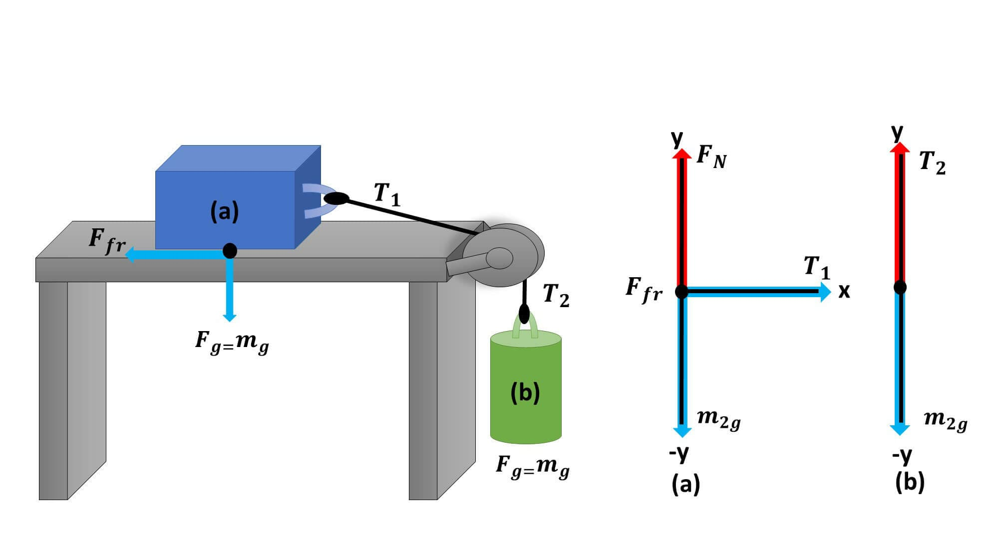

La mecánica estudia cómo se mueven los objetos y qué los hace moverse o detenerse.
Velocidad: qué tan rápido se desplaza un objeto (ej: un auto a 80 km/h).
Aceleración: cuánto cambia la velocidad en el tiempo (ej: cuando un colectivo arranca fuerte desde una parada).
Fuerzas: interacciones que cambian el estado de movimiento.
Las leyes de Newton explican que un objeto se mueve o se detiene por la acción de una fuerza.
Ejemplo: cuando pateás una pelota, aplicás una fuerza que la acelera; luego, la fricción con el aire y el suelo la frenan.
